Starting Pitchers#
See starting pitcher rankings here
Drafting starting pitchers is easily the most important part of a fantasy team - hence I will provide many options here.
Upper Echelon: Chris Sale - ATL (My Rank: 18, ESPN: 31)#
First of I will acknowledge the injury concerns. Acknowledged. Sale just came of an absolutely dominant 2024 season where the won the NL Cy Young along with the Triple Crown. He also led the league with a ridiculous 225 strikeouts and a miniscule 2.09 FIP. These are nearly prime Jacob Degrom numbers. Age is also a factor here with Sale going into his age 36 season, but if what we saw last year is any indication age related regression is not a concern. Sale leaned on his slider more than ever last season, actually making it his primary pitch with a 40.3% usage. This was for good reason as against Sale’s slider batters returned a .212 xwOBA with a 42.7% whiff rate. Sale also really limits walks, with an 87th percentile BB% of 5.6% last year that mirrors his prime numbers with the White Sox. I would expect some regression in terms of ERA, simply because it is nearly impossible to maintain an ERA sub 2.50, but expect similar strikeout numbers this year barring any injury. Sale is a fantasy ace who should be considered as a borderline top 5 fantasy starter this season. 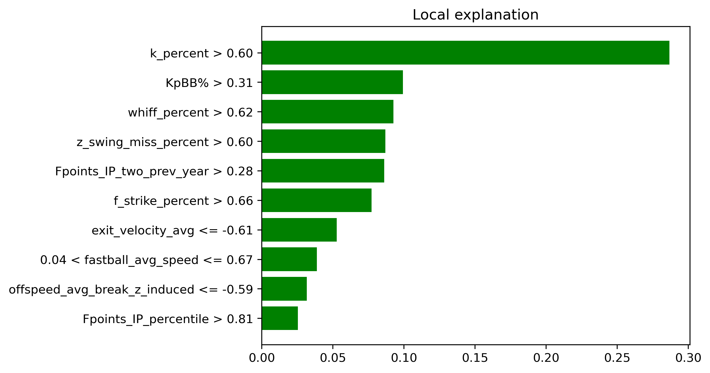
Upper Echelon: Joe Ryan - MIN (My Rank: 26, ESPN: 68)#
Ryan quietly had a very good season in 2024 - highlighted by an xERA of 2.87 (0.73 points below his true ERA of 3.60) along with a xFIP of 3.44. His stuff does not jump off the page intially with an average fastball velo of 94 MPH - however his fastball is extremely effective due to the rising effect he generates along with above average arm-side run. Over the last two seasons Ryan has added a splitter and sweeper, both of which complement his fastball very effectively. Although he is largely a flyball pitcher - which can lead to home runs - Ryan has been lowering his flyball rate season by season (down to 45% in 2024 from 53% in 2021) which is encouraging. Where Ryan really excels is with walks and strikeouts, sporting an 80th percentile 27.3 K% along with a miniscule 96th percentile 4.3 BB%. This makes him an extremely fantasy friendly option even if the ERA does not improve. Expect Ryan to fully break out this season and truly assert himself as a top pitcher in the league 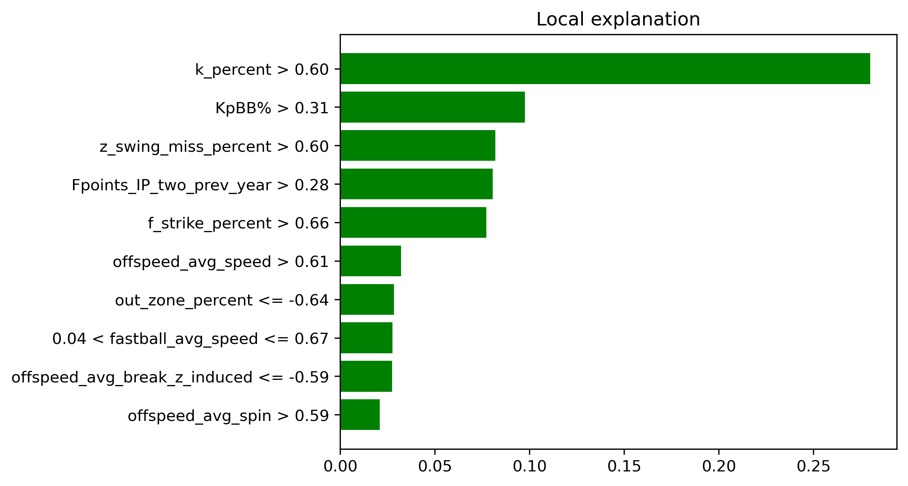
Upper Echelon: Bailey Ober - MIN (My Rank: 37, ESPN: 78)#
Ober presents an eerily similar skillset to the aformentioned Joe Ryan… the Twins seem to be on to something here. Ober introduced a new cutter to pair with his big breaking slider (12.4 inches of horizontal break) in 2024, leading to mixed results. His ERA in 2024 of 3.98 was the highest of Ober’s last three seasons, however his xFIP was the lowest of his career at 3.83. Ober struggles with flyballs - and specifically the home run - with a 50% flyball rate and a 11.6% HR/FB rate in 2024. His fastball averages at only 91.7 MPH, however Ober’s 97th percentile extension of 7.3 feet allows him to compensate for the lack of velocity. Once again similar to Joe Ryan, Ober thrives at limiting walks and producing strikeouts, with a 78th percentile K% of 26.9% and a 80th percentile walk rate of 6.1%. Ober should carry on as a very effective pitcher in 2025, with the potential to elevate himself even further if he can find a way to reduce the home runs. 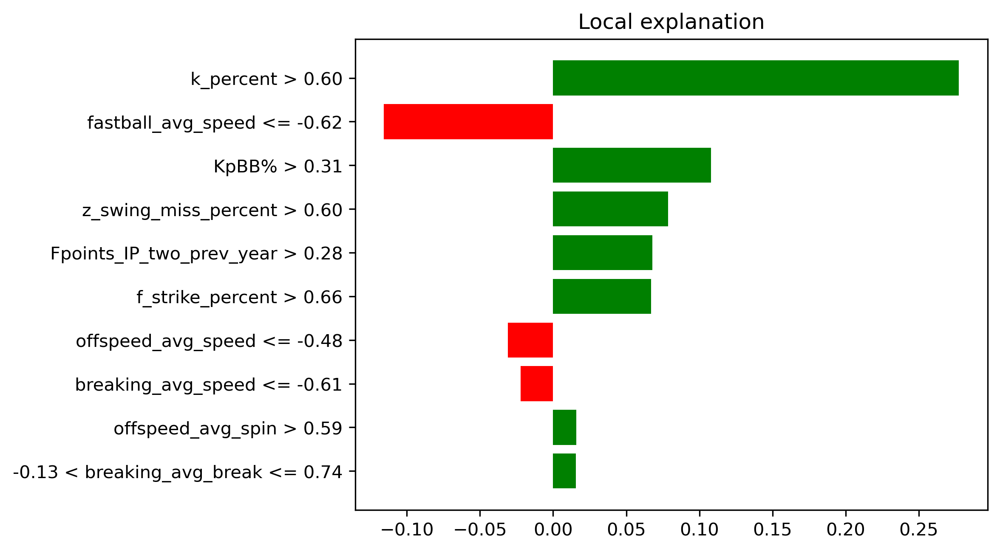
Upper Echelon: Grayson Rodriguez - BAL (My Rank: 53, ESPN: 121)#
Following a mediocre rookie season in 2023 the new Orioles ace took steps forward in 2024, posting a 3.86 ERA with an 3.57 xFIP in 116 innings. Rodriguez has an electric fastball, averaging 96.1 MPH with horizontal break 5 inches above league average. His changeup complements the fastball nicely, which led to hitters having a .241 wOBA against it last season. Rodriguez also utilizes extension to his favor, posting a 97th percentile 7.3 feet of extension (the same as Bailey Ober!). Getting swings and misses is not an issue either, with Grayson posting an 82nd percentile whiff rate of 30% in 2024. He does allow some hard contact, with a 40th percentile hard hit percentage of 39.7%, however this can be overlooked if the stuff continues to develop. The Orioles appear to have faith in the young righty, as they did not sign a true replacement (sorry Charlie Morton) for Corbin Burnes, leaving Rodriguez as the teams #1 starter coming into the 2025 season. I would have similar faith in Rodriguez in fantasy drafts. 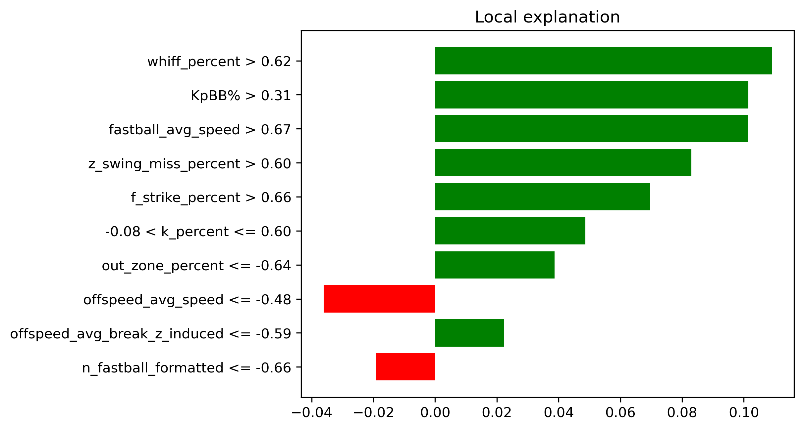
Other upper echelon pitchers of note:#
Spencer Schwellenbach - ATL (My Rank: 63, ESPN: 115)
Jacob Degrom - TEX (My Rank: 98, ESPN: 112)
Kodai Senga - NYM (My Rank: 164, ESPN: 150)
Jared Jones - PIT (My Rank: 87, ESPN: 160)
Sleeper: The Entire Tampa Bay Rays rotation#
If you aren’t familiar - the Rays consistently pump out quality MLB players out of nowhere. I expect at least two of the guys to significantly outperform their projections - just a quick blurb on all of them. I will only include Ryan Pepiot’s LIME plot to save space. Along with the fact that he does not have a single negative contribution in his top 10 most valuable features.
Shane McClanahan (My Rank: 124, ESPN: 244)#
McClanahan is coming off of his second Tommy John surgery and will likely be capped at 150 innings this season. But still, a pitcher who finished with a 2.54 ERA, 2.60 xFIP and a 30.3 K% just three years ago should not fall this far.
Ryan Pepiot (My Rank: 103, ESPN: 203)#
Pepiot is perhaps the favourite of the bunch, posting a 3.60 ERA with a 3.95 FIP in 2024. His fastball has an electric 19.4 inches of vertical break, and he posted a 82nd percentile whiff rate of 29.9% in 2024, hinting at some massive strikeout potential. 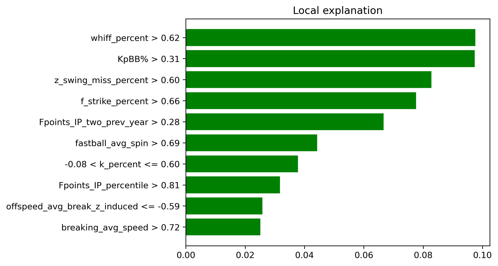
Taj Bradley (My Rank: 99, ESPN: 169)#
Bradley’s 2024 was a tale of two stories, posting a 2.90 ERA in the first half but faltering to a 5.30 ERA in the second half. The strikeouts are there at a 76th percentile 26.6 K%, but he has to limit hard contact a bit better to fully take the next step.
Shane Baz (My Rank: 270, ESPN 245)#
Baz produced a 3.06 ERA in 79 innings last season, although a 4.39 xFIP hints at some regression. His curveball grades out well at a 114 stuff+, and there is definitely potential to grow. Baz is the one member of the Rays rotation I am not as high on.
Drew Rasmussen (My Rank: 255, ESPN: 317)#
Rasmussen is absolutely nasty - he posted a 30% K rate to go along with an obscene 1.35 FIP and 2.57 xFIP in 28.2 relief/opener innings last year. His baseball savant page is an ode to Playboi Carti’s Whole Lotta Red. Take Rasmussen every single time at the end of drafts, although the security of his starting role is questionable and total innings may be limited.
Sleeper: Sandy Alcantara - MIA (My Rank: 179, ESPN: 298)#
Feels a bit weird to have a former Cy Young winner as a sleeper but here we are. Alcantara is coming off of Tommy John surgery, however all indiciations point towards him being fully healthy - including being named the Marlins Opening Day starter. Do not expect the 2022 version of Alcantara this season - his 2023 season was far less fruitful with a 4.14 ERA and 4.00 xFIP. Although his fastball averages a blazing 98 MPH, Sandy operates with more of a pitch to contact approach, producing a 87th percentile 51.9 GB % and only a 26th percentile K% of 19.8% in 2023. Alcantara does face potential innings limits along with the curse of playing for the Marlins, however it is impossible to pass up the upside if presented an opportunity at the end of drafts. 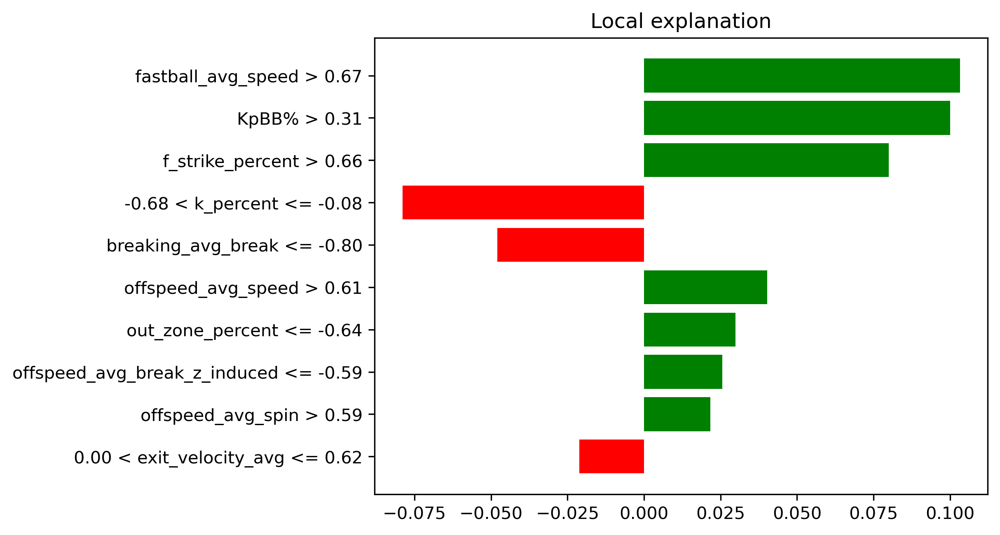
Sleeper: DJ Herz - WSH (My Rank: 188, ESPN: 431)#
To preface this - Herz is not guaranteed to be in the Nationals rotation at the beginning of the season. To me he should be going toe to toe with MacKenzie Gore to be the staff ace. On the surface Herz rookie season was just alright, he posted a 4.16 ERA in 88.2 innings with some command issues. His 3.26 xERA, 3.85 xFIP and 81st percentile 27.7% K rate indicate some true potential however. Herz utilizes a fastball with well above average horizontal movement (12.4 inches, 5.1 inches above average) along with a changeup to generate huge whiffs against right handed batters, while also including a slider. Herz could easily flame out, but is an intriguing upside pick, especially as the season matures. 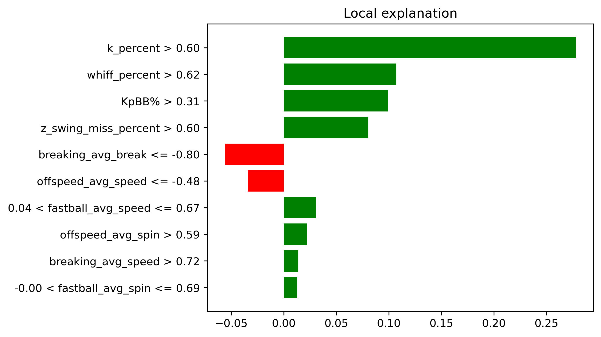
Sleeper: Jeffrey Springs - OAK (My Rank: 215, ESPN: 341)#
Springs has been a bit of a tease over the last few years - posting a 2.46 ERA in 135.1 IP in 2022, but being limited to 49 IP in the last two seasons due to injury. He is a soft tossing lefty who relies heavily on his changeup to get hitters off-balance, however Springs is still able to generate whiffs and Ks, with both his whiff% and K% eclipsing the 70th percentile in each of his last three seasons. The numbers suggest he did decline a bit last season with his Pitching+ dropping to 93 from an average of 110 over his career, however Springs still produced a 3.27 ERA with a 3.80 xFIP in his 33 IP. Springs is a large question mark heading into his age 32 season, but could return great value if he can stay healthy and maintain his success. 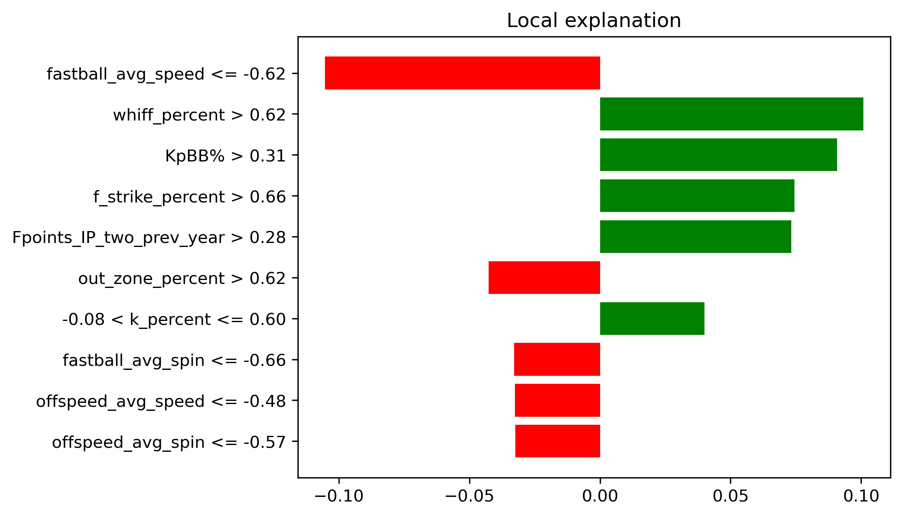
Sleeper: Clay Holmes - NYM (My Rank: 525, ESPN: 350)#
Ignore the rankings here completely - Holmes will be a completely different pitcher in 2025. He moved to the cross-town Mets after a tumultuous year as the closer for the Yankees, and will be starting games for them. Deja Vu from Michael King anyone? Although Holmes led the league with blown saves with 13 in 2024, he was still effective, posting a 3.14 ERA and a 3.01 xFIP. His bowling ball sinker (with a ridiculous 25.2 inches of vertical drop) produced a 100th percentile groundball rate of 64.6%, and he still maintained a 67th percentile K% of 25.1% with his slider. Holmes has added a changeup and cutter (shoutout @TJStats on X) to his repertoire this spring to fully round out his movement-heavy arsenal. The strikeouts are likely to drop as a starter, but I would not be surprised at all if Holmes has a quick ascnesion this season - think the Michael King of this year. 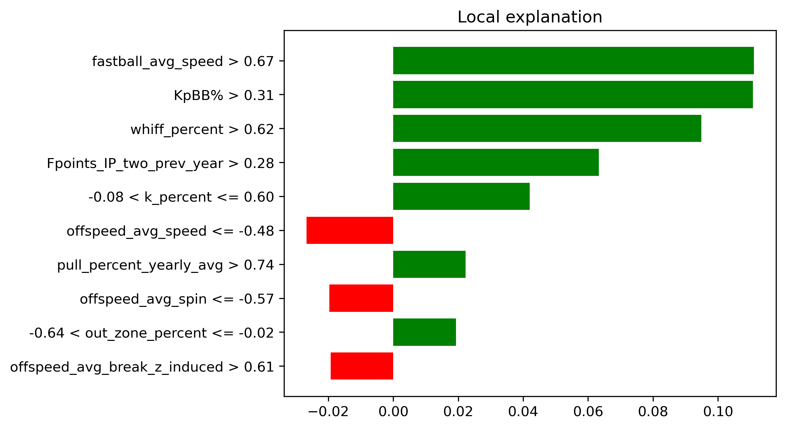
Other sleeper pitchers of note:#
Jackson Jobe - DET (My Rank: NA, ESPN: 462)
David Festa - MIN (My Rank: 484, ESPN: 413)
Cody Bradford - TEX (My Rank: 428, ESPN: 397)
Gavin Williams - CLE (My Rank: 245, ESPN: 315)
Bust: Zac Gallen - ARI (My Rank: 156, ESPN: 94)#
Following a great 2022 and 2023, Gallen showed some concern in 2024. The run-based statistics were fine - a 3.65 ERA with a 3.62 xFIP - but many of his underlying metrics took a hit. The main cause for concern was a loss of command as Gallen’s 2024 walk rate of 8.7% was far higher than an average of a 6.2% over the 2022-23 seasons. His fastball also became much less effective, with batters producing a .368 xwOBA against it in 2024 compared to a .324 xwOBA in 2023. The movement profile of Gallen’s fastball remained very similar, so this can likely be chalked up to a loss of command, or maybe just MLB hitters catching on. Stuff+ also implies a decrease in pitch quality, with a 92 Stuff+ in 2024 compared to a 97 Stuff+ career average. I would avoid drafting Gallen at his current ESPN rank. 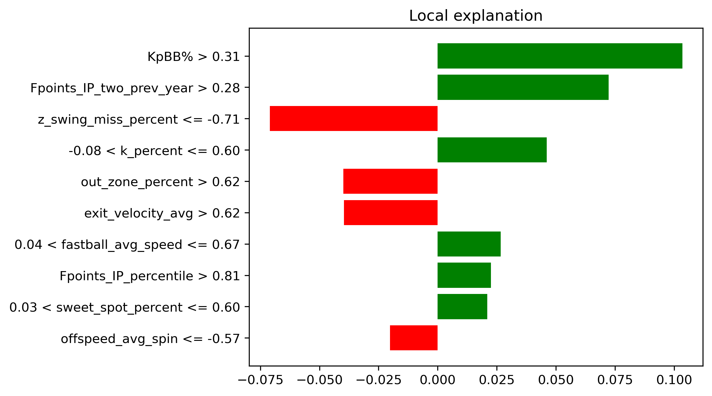
Bust: Corbin Burnes - ARI (My Rank: 39, ESPN: 23)#
Don’t get me wrong, Corbin Burnes will still be a great pitcher in 2025. He just isn’t the same strikeout machine we saw from 2020-2022. His xFIP has jumped to an average of 3.67 over the last to seasons, up from an average of 2.71 during the aformentioned 2020-22 stretch. This is mainly a product of a decrease in whiffs on his cutter - which produced a 19% whiff rate in 2024 compared to a 28% whiff rate in 2022. This resulted in a league average K% of 23.1% in 2024. Burnes still excels at limiting hard contact, he just lacks the true SP1 upside that he once had. Don’t be afraid to draft Burnes, I just wouldn’t recommend going out of your way to do so. 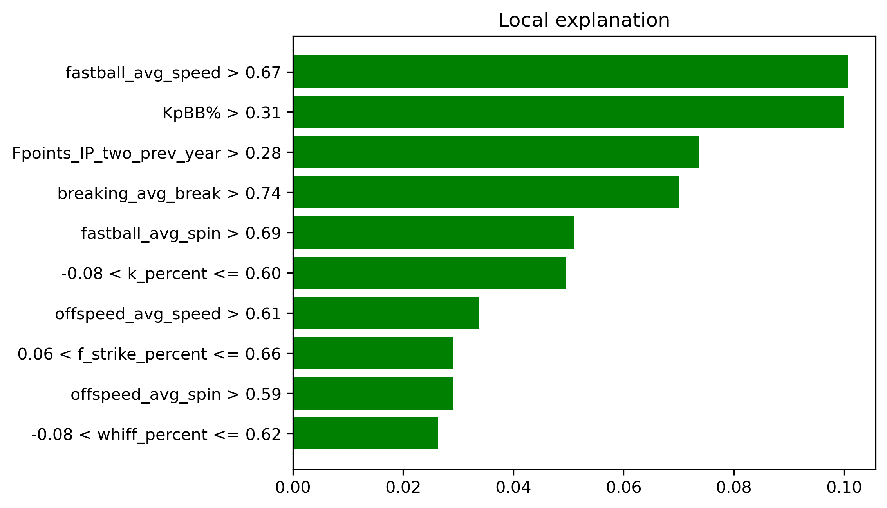
Bust: Tyler Glasnow - LAD (My Rank: 226, ESPN: 80)#
We all know that Glasnow is one of the nastiest pitchers in the league when healthy… but health is the issue. Last year his 134 IP was a career high, and he is a part of a ridiculous Dodgers rotation that can afford to limit him throughout the season. The only negative thing to say about Glasnow as a pitcher is that he is prone to giving up hard contact, with a 37th percentile hard-hit% of 40.1% in 2024. Other players like Jacob Degrom and Mike Trout are punished much more for their injury history, and I would be a bit weary of Glasnow just not producing enough volume this season. Draft him at your own risk though. 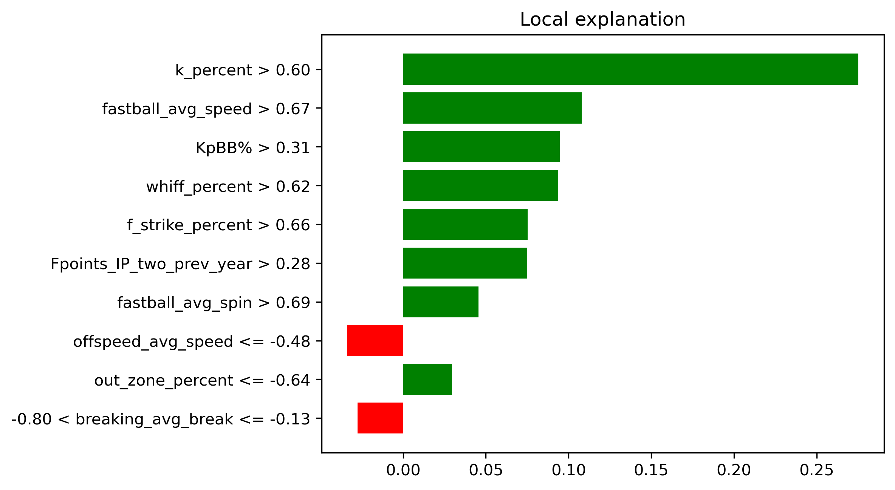